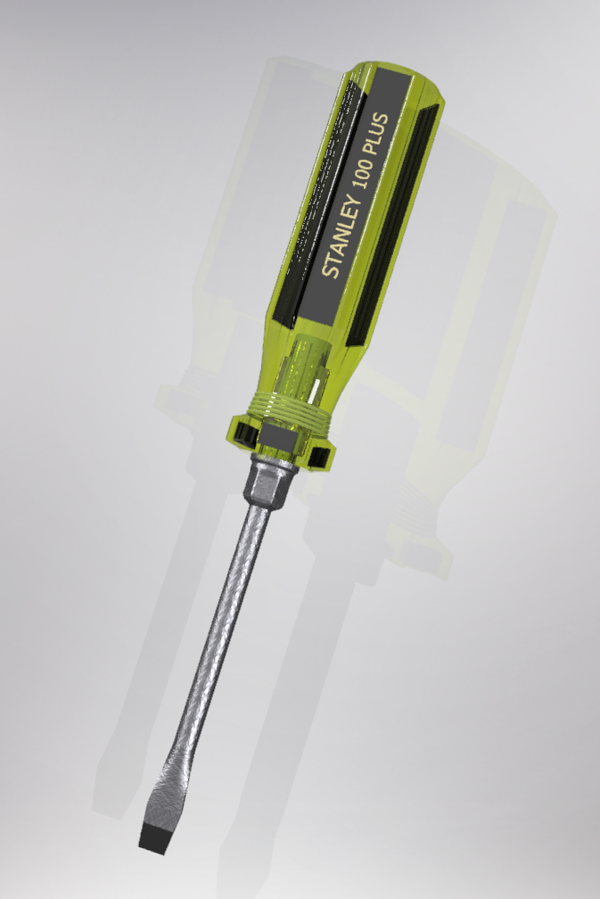

Precision Screwdriver CAD Model
Type: Personal Project
Focus: Parametric Modeling & Dimensional Accuracy
Term: Fall 2025

Overview
This project was a precision CAD recreation of a real-world screwdriver. The objective was to accurately model small components while maintaining proper dimensional relationships and design intent.
Technical Focus
The modeling process required careful dimensioning of small geometric features, fillet transitions, shaft profiles, and handle contours. Maintaining parametric relationships ensured that the design could be adjusted without breaking feature dependencies.
The project emphasized accuracy, clean feature trees, and mechanical realism in part recreation.
Skills Demonstrated
- Parametric CAD Modeling
- Feature-Based Design Strategy
- Dimensional Accuracy & Constraints
- Complex Fillet & Surface Control